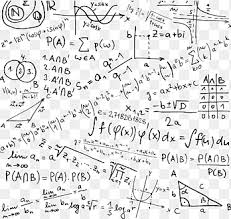
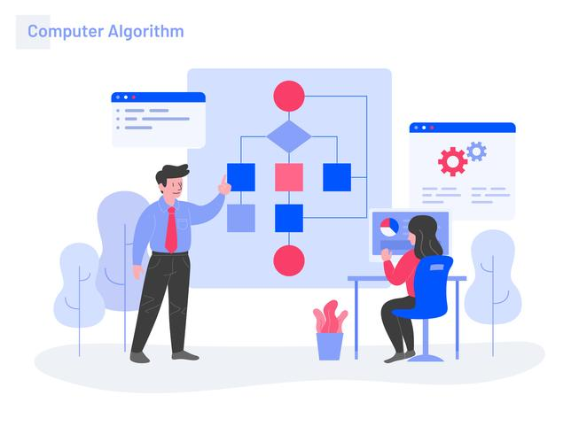
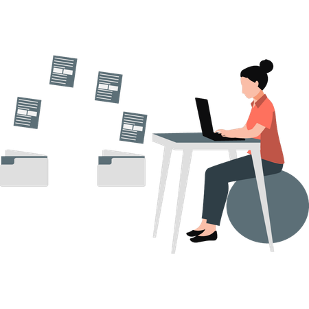

Matemáticas
Análisis y cálculo aplicado.
Organización, estudio y progreso académico
Constancia • Organización • Aprendizaje continuo
"La organización es la clave para disfrutar el camino del aprendizaje."

Análisis y cálculo aplicado.

Lógica y estructuras de datos.

Arquitectura de procesadores.